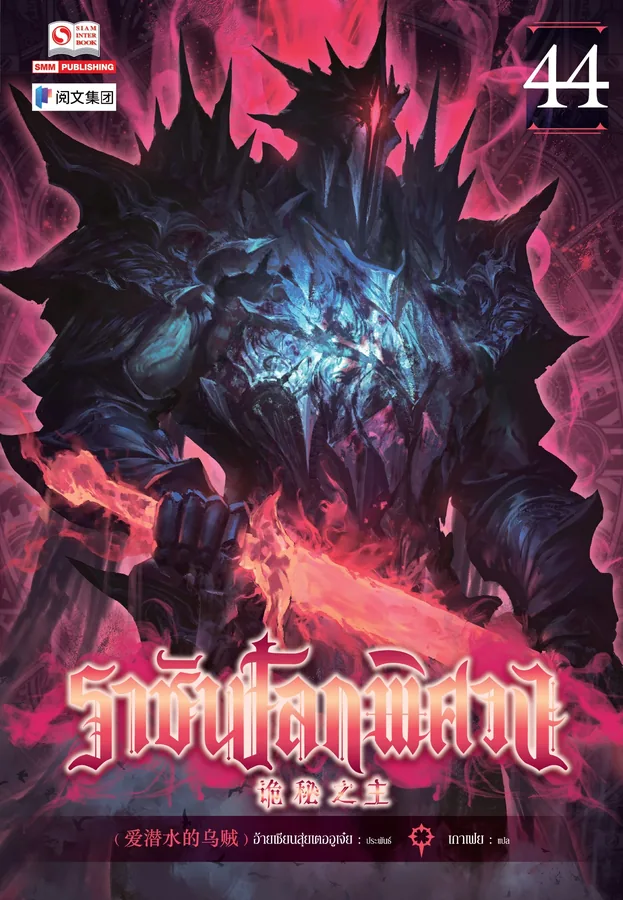

Overview
"His" reputation is exactly the opposite of "His" physical build.
Queen of Calamity Cohinem on Aurmir's betrayal of Lilith, Book 1, chapter 1066
The Giant King Aurmir is one of the Ancient Gods from the Second Epoch. "He" was an Ancient God of the Twilight Giant and the Red Priest. "He" also had authorities over the Error.
Before dying, Aurmir managed to pass on "His" status as the God of the Twilight Giant Pathway to "His" eldest son Badheil, who later became the God of Combat.
Appearance
"He" is one-eyed, but it's a right eye. This is the sense of wrongness brought by the Error,1Author's WeChat post error_formulas, part 6 since "His" eye contains a Worm of Time Beyonder Characteristic.7
;Wraith/Residual Will/Evil Spirit Its skin was grayish-blue, and it wore silver-gray armor that seemed to be stained with blood. Its face was glowing like the setting sun, as though it was a manifestation of its eyes. Just its existence alone had caused the surrounding trees and the void to bend, making everything around it to begin waning uncontrollably.8
Pathway Composition as an Ancient God
"His" Pathway composition is as follows:2Author's WeChat post ancient_gods
- Twilight Giant: Uniqueness + 3 Sequence 1.
- Red Priest: Uniqueness.
- Error: 1 Sequence 1.
In addition, "He" also had other excess characteristics. Omebella helped "Him" expel many excess characteristics through procreation, and "He" gained a certain amount of sanity through this.3Book 2, chapter 890 However, "His" Worm of Time Beyonder Characteristic could not be expelled and was only separated at "His" death due to the overlap between the Error and Twilight Giant's authority over Time,9 10 causing the Beyonder Characteristics to be deeply fused. Later, the Ancient Sun God, using the Uniqueness of Error, took it from the God of Combat.11
History
First Epoch
According to the Myth of Creation, "He" and the rest of the Giants were formed from the heart of the Original Creator.12
"His" true origins can be traced back to the First Epoch. At that time, "He" was guarding "His" parents corpses despite being a purely mad demigod-level monster.13
- In the Waning Forest, a place only Giant King can enter, buried inside it are "His" parents, who are also the origins of giants.14
- The exploratory team of the City of Silver explored the tomb and found the remains of two human skeletons. One was less than 1.9 meters tall, while the other was less than 1.8 meters tall. It was speculated that "His" origin was in fact human.15
Omebella's heart was touched by this, "She" then helped "Him" extract "His" excess Beyonder Characteristics through procreation and "He" gained a certain amount of sanity through this.3
The noble Queen used Her maternal nature to help the great King calm His emotions…
Giant King’s Court’s words of praise for the Giant Queen Omebella, Book 2, chapter 890
The death of Zedus and the birth of the Ancient God Aurmir marked the end of the First Epoch. The birth of the very first Ancient God is very significant: It was the very first will of a creature that isn't the will of the Original Creator that became a god in the truest of sense. This also marked the exact moment of when the Original Creator's Astral Barrier began deteriorating. Its countdown to dissipation has begun.
Second Epoch
Sprouting Era
The Giant King Aurmir became one of the eight Ancient Gods that ruled over the entire world. The Giants used to rule over the City of Silver, so the City of Silver now controls the Warrior Pathway.16 According to the records left by Sanguines, the City of Silver believed in "His" wife, Omebella, rather than "Him".17
Early Era of Fire
In the Elves' chronicle, during the Early Era of Fire, the quasi-humans races led by the Giant King Aurmir, the Elf King Soniathrym, and the Sanguine Ancestor Lilith, fought against the non-human races led by Dragon of Imagination Ankewelt, the Phoenix Ancestor Gregrace, and the Mutated King Kvastir. The Devil Monarch Farbauti and the Annihilation Demonic Wolf Flegrea were not on any side, wanting to destroy and corrupt everything.18 At the end, Lilith, Kvastir, and Flegrea perished at the same time due to a conspiracy.4Author's WeChat post history
Dual Era
The Giants and Elves completely split in this era, each denouncing the other as traitors and sparked a 230-year-long war, later referred to as the "War of Betrayers" by history.4 From Siatas' memories, the Elf King Soniathrym believed that Aurmir betrayed Lilith and caused "Her" death.5
During this time, the Giants under Aurmir and the Dragons under Ankewelt were the dominant race, hence the name of "Dual Era".5Book 1, chapter 1066 Using the Proxy Authority of the Twilight Giant, Aurmir was able to slightly use the River of Eternal Darkness, which is the reason why "He" could contend with Ankewelt.6Author's WeChat post giant_abilities
Era of Tranquility
Giants, elves, dragons, demons, and phoenixes reached a stalemate, leading to a period of relative peace. Newborn Elves and Giants began to have more emotions and feelings.4
From Siatas' memories, Soniathrym went to Giant King's Court to give Aurmir a lesson.5 It was said that the Giants cooperated with some secret cult that came out of the human race to deal with Soniathrym. This matter was led by Aurmir's wife Omebella and son Badheil.5
Dawn Era
According to records of the City of Silver, Aurmir, along with the other Ancient Gods, all perished after the Ancient Sun God emerged and reclaimed the authorities from "Them". However, the true history is that the Giant King Aurmir didn't perish on the spot at the hands of the Ancient Sun God. "He" used both the Twilight Giant's Proxy and the Red Priest's Sacrifice19 in a final attack against the Ancient Sun God, and managed to escape and pass on "His" power to "His" eldest son Badheil—the later God of Combat—before dying.20 6
Legacy
Unlike most of Ancient Gods, the Giant King Aurmir was not forgotten. In various legends and myths, "He" is remembered as a great existence on par with the deities. Even now, there were still some places that worshiped "Him". The most famous and most expensive grape wine in the Intis Republic was named after Aurmir. It was said that the Giant King particularly fancied those grape wine which was like blood.21 It is later revealed, the wine is made and named after the provincial capital Aurmir, named after the Giant King. Aurmir stood as the provincial capital of Champagne Province, renowned as the foremost hub of wine production in the Northern Continent.22
The residence of the royal family of the Feysac Empire is attributed to the Giant King, named the "Aurmir Palace."23
Subsidiary Gods
- God of Dawn Badheil
- Goddess of Harvest Omebella
- God of Glory Bladel
- 3 Unnamed Children of Harvest
Related Places
- Giant King's Court
- Aurmir Palace
Trivia
- In the Fifth Epoch, "His" phantom/ Evil Spirit protected the graves of "His" parents. "He" was killed by the City of Silver Research Team of Derrick Berg, Colin Iliad, Lovia Tiffany,Joshua, Chaim, and Antioch. During the battle, "He" perceived the light from the Unshadowed Crucifix as a natural enemy.24
- "His" right eye served as an alternative to a Worm of Time Beyonder Characteristic.25
- "He" was one-eyed like all true Giants but "He" possessed a "right eye". This was a sense of wrongness associated with the Error.26
Translations
| Language | Name |
|---|---|
| English | Aurmir Giant King |
| Chinese | 奥尔米尔 / 奧爾米爾 巨人王 |
| Thai | เออร์มีร์ ราชายักษ์ |
References
- Author's WeChat post error_formulas, part 6.
- Author's WeChat post ancient_gods.
- Book 2, chapter 890.
- Author's WeChat post history.
- Book 1, chapter 1066.
- Author's WeChat post giant_abilities.
- Author's WeChat post error_formulas.
- Book 1, chapter 1114.
- Author's WeChat post error_formulas, part 1.
- Author's WeChat post error_formulas, part 16.
- Author's WeChat post error_formulas, part 11.
- Book 1, chapter 18.
- Book 2, chapter 1114.
- Book 1, chapter 698.
- Book 1, chapter 1114.
- Book 1, chapter 138.
- Book 1, chapter 523.
- Book 1, chapter 1066.
- Author's WeChat post ancient_gods, part 12.
- Book 2, chapter 900.
- Book 1, chapter 180.
- Book 2, chapter 165.
- Book 1, chapter 452.
- Book 1, chapter 1114.
- Author's WeChat post error_formulas.
- Author's WeChat post error_formulas, part 6.
Source
Article adapted from the Aurmir article on the Lord of the Mysteries Fandom wiki (CC BY-SA). Chapter numbers follow that article's citation format.
Image gallery
